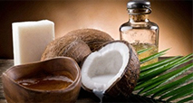
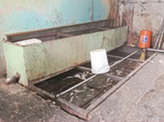
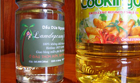
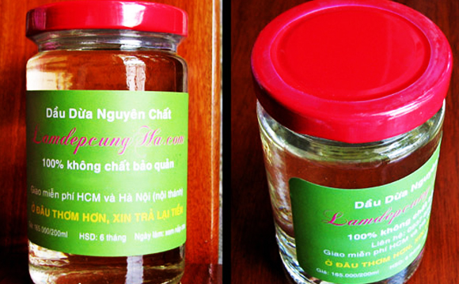
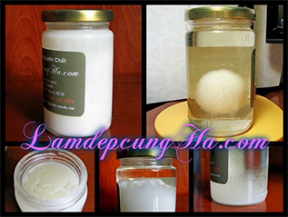

Chất dưỡng da tự nhiên, Trẻ hóa làn da, Làm da mềm mại, Ngăn ngừa nám da, tàn nhang, Làm dịu da cháy nắng, Dưỡng môi, trị khô nứt, Giảm ngứa và sưng tấy do côn trùng cắn,........
Mua Dầu Dừa Ở Đâu Tốt Nhất Sự Thật Về Dầu Dừa Nguyên Chất
Trên 90% nơi bán dầu dừa trên thị trường đều cam kết là “tinh khiết, nguyên chất, không xử lý hóa chất” nhưng thực tế đều đã pha tạp nhiều. Vậy sự thật về dầu dừa nguyên chất là gì, làm sao mua được dầu dừa nguyên chất ở Hà Nội, Hồ Chí Minh, Đà Nẵng...
Bản quyền của ©www.LamdepcungHa.com
(Bài viết này dựa trên kinh nghiệm thực tế của Hà. Hiện nay có nhiều người tự ý sao chép gần như trọn vẹn nội dung của Hà và đưa tên họ vào để bán dầu dừa trên Webtretho, Lamchame, Facebook và một số website bán hàng chuyên nghiệp.)
A. Đi tìm ẩn số
 Suốt cả tháng trời Hà đã tìm đến nhiều địa chỉ bán dầu dừa tìm hiểu, từ những thương hiệu dầu dừa được chị em mách nhau nhiều trên các diễn đàn hiện nay đến những hiệu ít nổi tiếng hơn; từ giá bình dân “nhà lá” (110-120k một lit dầu dừa) cho tới giá “nhà hàng” (80k-120k cho 100 ml dầu dừa).
Tất cả đều khẳng định dầu dừa của mình "100% nguyên chất, 100% tinh khiết, công nghệ ép nguội, hoàn toàn không phụ gia, không chất bảo quản" v.v và v.v. Họ còn hướng dẫn cách phân biệt dầu dừa "tinh khiết" với "tinh luyện", phân biệt dầu dừa "thật" với dầu dừa "dỏm". Sau khi nghe xong các chị chỉ muốn mua dầu dừa của họ thôi! Một số còn đưa ra nhiều lời chứng thực của người sử dụng về tác dụng với sức khỏe hoặc làm đẹp từ sản phẩm của mình.
Hà không biết những lời chứng thực đó thật đến mức nào, thế nhưng cầm những chai dầu dừa mẫu lên xem và ngửi thì Hà khẳng định điều họ quảng cáo khác rất xa thực tế. Tất cả dầu dừa của họ đều có mùi rất nhạt (đã bị pha nhiều), thậm chí hăng và hơi chua (dầu đã cũ). Chưa kể, chỉ cần nghe qua giá bán thì cũng có thể đánh giá phần nào chất lượng bên trong rồi. Tại sao Hà lại nói như vậy?
B. Tiêu chuẩn dầu dừa nguyên chất/tinh khiết
Theo tiêu chuẩn, dầu dừa 100% nguyên chất (virgin) phải được lấy trực tiếp từ quả dừa già nguyên trái (tức không phải từ cơm dừa khô mà người ta đã cho dầm mưa dãi nắng hoặc mốc meo có khi 3-4 tháng trời), không qua bất kì xử lý hóa chất nào. Cứ 2-3 trái dừa già cho 1kg cơm dừa. 1 kg cơm dừa lại cho khoảng 100-150 ml dầu dừa. Để có 1 lit dầu dừa xịn cần từ 13-15 trái dừa già tươi. Giá dừa già mua trực tiếp tại vườn trung bình là 110-130.000 đồng/chục (lúc cao điểm giá tới 180.000/chục, xem tại đây).
Như vậy mỗi lit dầu dừa nguyên chất thứ thiệt tính theo giá gốc cũng đã là 150.000 đồng (chưa kể tiền công nạo, ép, củi lửa, chế biến v.v), và đến tay người tiêu dùng ít nhất phải là 500k-600k/lit mới bù được chi phí (trong sản xuất, giá trị gốc của mặt hàng thường chỉ từ 10-20% giá bán, vì còn rất nhiều chi phí khác nữa). Vậy mà các thương hiệu dầu dừa chỉ bán với giá rất “dễ thương” 110-120.000/lit (thấp hơn cả giá vốn).
Từ đó các chị đoán biết được chất lượng rồi phải không ạ. Chắc chắn họ phải pha 3-5 lần thì mới có giá đó, hoặc là lấy nguyên liệu từ nguồn không đảm bảo nên giá rẻ như biếu. Loại “tinh khiết” mà như thế thì loại “tinh luyện” (giá 60-70k/lit) còn thế nào. Chị nào “lỡ” mua dầu dừa tinh luyện để làm đẹp hoặc uống để chữa bệnh thì không khéo “lợi bất cập hại”, thậm chí “tiền mất tật mang nữa”.
 Nếu vẫn chưa tin, các chị nên xem phóng sự "Kinh hoàng tinh luyện dầu dừa bằng chất tẩy rửa" của phóng viên báo Thanh niên. Ý nghĩa thật sự của từ "tinh luyện" chính là "biến bẩn thành sạch bằng hóa chất". Có một số sản phẩm còn dịch "dầu tinh luyện" (100% pure coconut oil) thành "dầu tinh khiết" (dầu 100% pure coconut oil tức là dầu đã được tinh luyện (refined)). Trong hình là hố đựng dầu dừa tinh luyện của một cơ sở chế biến dầu.
Còn những nơi bán giá “nhà hàng” (80k-120k cho 100 ml dầu dừa) thì sao? Mặc dù giá rất cao nhưng chất lượng không khác lắm với những hiệu bán giá “bình dân” ở trên. Theo thông tin mà Hà biết (tin cậy), trong số đó có vài hiệu lấy dầu dừa từ cùng một nguồn với những chỗ bán giá bình dân rồi tự đẩy giá lên rất cao để bán (tạo tâm lý là sản phẩm cao cấp).
Hà không đi sâu phân tích khả năng làm đẹp (hay làm hại!?) của những loại dầu dừa như vậy. Những loại đó có thể ít nhiều cũng có tác dụng làm đẹp vì chứa tinh chất dầu dừa, nhưng chắc chắn sẽ kém hơn nhiều so với dầu dừa thứ thiệt. Hơn nữa nếu dùng lâu dài thì không ai biết sẽ như thế nào!?
Nếu tôi đã "lỡ" mua dầu dừa tinh luyện hoặc không bảo đảm thì phải bỏ hết đi à?Khoan các chị nhé. Vì như Hà đã nói, những loại dầu dừa đó vẫn có giá trị làm đẹp nhất định. Tuy nhiên chỉ nên dùng cho cơ thể và tóc, hạn chế dùng cho mặt và đặc biệt không nên uống.
C. Dầu dừa nào thật sự tốt?
Quả là một nghịch lý khi tại một đất nước quê hương của dừa vậy mà tìm mua dầu dừa nguyên chất lại khó như thế. Có lẽ vì người Việt ít dùng dầu dừa để làm đẹp. Các cơ sở sản xuất dầu dừa chủ yếu bán để làm nhiên liệu hoặc sản xuất xà phòng công nghiệp.
Một nghịch lý nữa là những nghiên cứu ngọn ngành về công dụng của dầu dừa với sức khỏe và sắc đẹp, hoặc tiêu chuẩn dầu dừa tốt thật sự ở Việt Nam hình như chưa có. Gần như toàn bộ tài liệu được dịch từ nước ngoài, nhiều khi không phù hợp hoặc người dịch cố tình làm sai lạc đi.
Nhiều trang web khẳng định dầu dừa tinh khiết phải là không màu và trong veo như nước, nhưng có thể họ đã dùng nhiều chất tẩy thì dầu mới trở nên không màu (Người ta có thể điều chỉnh liều lượng chất tẩy để màu trong suốt hay vàng đục theo ý muốn).
Vậy cuối cùng dầu dừa ở đâu thực sự đảm bảo? Hà đề nghị 3 cách:
Cách 1 - Dành cho những chị có nhiều thời gian hoặc khéo tay
Các chị có thể tự làm dầu dừa theo hướng dẫn tại đây, chỉ mất khoảng 1 buổi sáng (mua nguyên liệu, vắt ép, củi lửa...). Đây là cách kinh tế nhất. Những gì các chị cần chỉ là sự kiên nhẫn và một chút khéo tay.
Nhiều chị email gửi Hà hỏi là tại sao làm cả kí cơm dừa mà không có một giọt dầu nào hoặc rất ít dầu, có lẽ do chưa xem kĩ hướng dẫn của Hà.
Cách 2 - Nhờ người quen
Nếu chị nào quê ở xứ dừa như miền tây, miền trung thì đừng quên nhờ người quen ở quê làm giúp nhé. Vì tận dụng được dừa có sẵn nên chắc chắn là sẽ "hạt dẻ" (rẻ) đấy ạ.
Cách 3 - Dành cho những chị ít thời gian
Mục đích đầu tiên khi Hà lập website này là vì sở thích viết và chia sẻ, chứ không phải để bán dầu dừa. Hơn nữa Hà cũng đã có bài viết hướng dẫn chi tiết cách làm dầu dừa.
Mặc dù vậy, có rất nhiều chị đề nghị muốn mua dầu dừa của Hà, vì không có thời gian tự làm hoặc làm không thành công. Cũng có chị làm được nhưng cảm thấy tiết kiệm được vài chục nghìn mà mất vài tiếng đồng hồ thì không bõ công.
Vì thế Hà nhận thêm việc đặt hàng dầu dừa cho những chị nào tin tưởng Hà để có thêm kinh phí duy trì website và tham gia một số việc thiện nguyện.
Hiện có nhiều trang web lớn đang bán dầu dừa "tinh khiết, nguyên chất 100%" với giá như sau:
- 120k/100ml
- 100k/120ml
- 114k/100ml
- ...
Thậm chí có trang còn khuyến cáo “chỉ dùng ngoài da, không được uống” (dầu dừa tinh khiết mà không được uống thì nguy quá!).
Tuy giá của họ cao gấp rưỡi của Hà nhưng Hà tự tin khẳng định dầu dừa của họ vẫn khác rất xa với dầu dừa mà Hà làm cho các chị, nên các chị có thể hoàn toàn yên tâm về giá cả và chất lượng ạ, có thể ăn, uống (trị bệnh) hay làm đẹp đều an toàn.
* Dầu dừa của Hà có phải do Hà làm không? Giai đoạn đầu Hà tự làm. Về sau số đặt hàng nhiều hơn nên Hà phải nhờ Cô ruột làm giúp. Về kĩ thuật thắng dầu và kinh nghiệm chọn dừa thì Cô giỏi hơn Hà rất nhiều. Cô theo đạo Phật, ăn chay trường nên là người mà Hà tuyệt đối tin tưởng.
Khi chọn dừa, phải chọn được loại dừa rám (dừa khô không già quá, không "non" quá), và biết canh lửa thật chuẩn thì dầu mới cho chất lượng tốt nhất.
Dầu nấu chuẩn sẽ có màu màu vàng nhạt, thật trong và mùi thơm lừng. Nếu màu sậm như màu dầu Tường An thì dầu đã bị quá lửa (xem hình). Nếu dầu bị đục là do trong dầu còn lẫn cặn và bụi nước li ti (mắt thường khó phân biệt), đây là nguyên nhân khiến dầu dễ bị hư.
Một số chị em cho rằng dầu dừa thủ công phải đục và sệt hơn dầu ăn, nhưng thực chất đó là do khi nấu còn nhiều cặn, cặn khiến dầu trông có vẻ sệt. Chỉ cần để khoảng 1 tuần sẽ thấy cặn lắng 1 lớp dày ở đáy rất rõ.
 Chị nào đã từng làm dầu dừa sẽ hiểu được việc thắng được mẻ dầu màu vàng nhạt nhưng phải thơm và trong là không dễ dàng. Hầu hết dầu dừa "hand made" tự làm trên thị trường đều có màu vàng rất sậm, nước dầu đục vì nấu quá lửa và còn nhiều cặn. Một nguyên nhân nữa là người bán tận dụng đến nước dầu thứ 2, thứ 3 để tiết kiệm chi phí.
GIÁ VÀ DUNG TÍCH: Giá 165.000/ lọ 200ml (duy nhất 1 loại)
Hà chỉ bán 1 loại duy nhất là dầu dừa nguyên chất (nước đầu tiên), đựng trong chai thủy tinh dung tích 200ml. Không có loại dung tích nhỏ hơn hoặc lớn hơn.
Trên thân chai có in nổi dòng chữ "LamdepcungHa.com". Nếu không có thì chắc chắn là sản phẩm mạo danh ạ.
ĐẶT HÀNG TẠI ĐÂYCAM KẾT
- Ở ĐÂU THƠM HƠN, XIN TRẢ LẠI TIỀN: Nếu các chị đã từng mua dầu dừa của những công ty hàng đầu VN như PL, TV, TVCL, SSM, LP, VTN (Hà chỉ nêu tên viết tắt) và nếu dầu dừa của họ thơm hơn của Hà, Hà sẽ biếu luôn không lấy tiền ạ.
- HOÀN TIỀN 100% NẾU KHÔNG HÀI LÒNG: Hà luôn đặt quyền lợi của khách hàng lên trên hết. Vì vậy trong vòng 10 ngày sử dụng, nếu các chị không hài lòng thì Hà sẵn sàng hoàn tiền 100% lại cho các chị ạ. Không có chuyện làm khó dễ khách hàng hoặc kéo dài thời gian. Vui lòng xem thêm chi tiết chính sách đổi trả tại đây.
- Có thể uống được: Hà chỉ bán 1 loại dầu dừa duy nhất, hoàn toàn không pha tạp. Các chị có thể yên tâm dùng để uống hoặc làm đẹp.
- Nếu dầu dừa bị vỡ do vận chuyển, hoặc tôi nhận thiếu hàng thì sao? Chỉ cần gửi email hoặc gọi điện, Hà sẽ gửi chuyển phát nhanh (cpn) phần bị thiếu hoặc gửi lại lọ bị vỡ cho các chị trong thời gian sớm nhất. Hà luôn tin các chị nói thật!
- Đã chuyển khoản nhưng chậm nhận được hàng thì sao? Sau khi đã chuyển khoản, nếu quá 3 ngày (ở gần) và 4 ngày (các tỉnh xa) mà các chị chưa nhận được dầu dừa, có thể là do bên công ty CPN chuyển chậm, hoặc rất hi hữu là Hà gửi sót đơn hàng. Các chị vui lòng liên hệ, Hà sẽ giải quyết triệt để ạ.
Đã có một số chị chuyển khoản cho Hà mà không để lại bất kì thông tin gì, đến vài tuần hoặc cả tháng sau mới liên hệ, Hà vẫn truy vấn lịch sử giao dịch để giải quyết. Tuy nhiên Hà không khuyến khích việc này đâu ạ! :) - Chưa từng có trường hợp nào chuyển khoản bị mất tiền hoặc không nhận được hàng!!! Điều quan trọng nhất là các chị nhớ nhắn tin sau khi đã chuyển khoản, để Hà biết tiền của ai để gửi hàng ạ.
- LamdepcungHa.com có đáng tin cậy?
- Website của Hà đã được đăng ký với Bộ Công Thương.
- Hà là người phụ trách đầu tiên của chuyên mục "Nhật kí Hana" trên Eva.vn được nhiều bạn gái yêu thích (hiện tại Hà không phụ trách nữa).
- Hà cũng xuất hiện chính trong một chương trình về "Làm đẹp tự nhiên" của O2 Tivi phát sóng tháng 9/2012.
- Trang Facebook Làm Đẹp Tự Nhiên của Hà hiện có trên 500.000 người theo dõi.
Rất nhiều anh/chị ở xa chưa biết Hà là ai nhưng sẵn sàng chuyển khoản trước để mua 10-20 lọ. Hầu hết khách của Hà đều quay lại mua nhiều lần.
Đặc biệt trong số khách của Hà trước đây có người mẫu Chung Thục Quyên và chú Lê Dũng Nhi (diễn viên).
Một số câu hỏi các chị thường thắc mắc về sản phẩm dầu dừa của Hà
- Tôi thường nghe nói dầu dừa sản xuất theo công nghệ ép lạnh tốt hơn dầu dừa làm thủ công dùng nhiệt, điều đó có đúng không? Rất nhiều nghiên cứu khoa học tiến hành tại các nước chuyên sản xuất dầu dừa như Phillipines, Sri Lanka, Ấn Độ, Malaysia... đã khẳng định điều hoàn toàn ngược lại: dầu dừa sản xuất thủ công (dùng nhiệt) có thành phần chất chống oxy hóa cao hơn hẳn so với dầu dừa ép lạnh, vì vậy tốt hơn dầu ép lạnh. (Xem kết quả các nghiên cứu tại đây)
- Dầu dừa của Hà có uống được không? Chắc chắn uống được, vì dầu dừa của Hà làm từ trái dừa khô nguyên trái, và không có chất bảo quản. Gia đình Hà vẫn dùng dầu dừa nấu ăn ạ.
- Giá của Hà có phải rẻ nhất không? Hà cam kết bán dầu dừa chất lượng tốt nhất với mức giá hợp lý chứ không phải rẻ nhất, đơn giản vì luôn luôn có người bán rẻ hơn cho dù giá nào đi chăng nữa. Có một điều chắc chắn là giá của Hà tốt hơn giá của rất nhiều chỗ khác ạ.
- Dầu dừa của Hà có mấy loại? Chỉ một loại thôi ạ. Vì uy tín là trên hết nên Hà chỉ chọn loại dầu tốt nhất và thơm nhất để bán, tuyệt đối không tận dụng lại dầu cũ. Những nước dầu không thơm Hà dùng để nấu ăn trong gia đình.
TẠI SAO KHI ĐỂ 2 CHAI DẦU DỪA CẠNH NHAU, 1 CHAI CÓ LỢN CỢN MÀU TRẮNG CÒN 1 CHAI THÌ KHÔNG? (XEM HÌNH)
Đây là hiện tượng bình thường. Các nhà khoa học đã phát hiện ra rằng nhiệt độ đông đặc của dầu dừa dao động từ 22-25.5 độ C (chênh lệch 3.5 độ), chứ không phải cố định như nước là 0 độ C. Tại sao lại như vậy?
Trong dầu dừa chứa đến 10 loại axit béo, mỗi loại có nhiệt độ kết tinh khác nhau. Tùy theo tỉ lệ các axit béo trong chai dầu dừa mà nhiệt độ đông đặc của dầu dừa trong chai sẽ khác nhau. Vì dầu dừa của Hà làm thủ công, chia làm nhiều đợt nhỏ nên thành phần trong mỗi chai sẽ khác nhau chút ít. Vì vậy trong khoảng từ 22 đến 25 độ thì sẽ có chai đông đặc trước, có chai đông sau. Còn dưới 20 độ C thì mọi chai dầu dừa đều đông đặc.
Không chỉ riêng dầu dừa, tất cả các loại dầu thực vật (dầu oliu, dầu bắp...) và mỡ động vật đều có đặc tính chung như vậy (nhiệt độ đông đặc nằm trong 1 khoảng biên độ nào đó). Các chị có thể để ý hai dĩa nước kho thịt thường là có dĩa đông trước, dĩa đông sau phải không ạ?
Xem nguồn tiếng Anh tại đây ạ.

- Dầu dừa kết tinh (đông đặc) như thế nào?
Khi trời lạnh (từ 22 đến 25.5 độ C), dầu dừa sẽ kết tinh, bắt đầu là những hạt trắng như mỡ rồi đông lại như sáp. Điều này hoàn toàn không làm ảnh hưởng gì đến chất lượng. Khi sử dụng chỉ cần dùng muỗng xúc 1 ít ra tay thì dầu dừa tự tan chảy (nhiệt độ cơ thể là 37 độ), không cần phải cho dầu dừa vào lò vi sóng cho mất công ạ.
- Có thể đến mua trực tiếp?
Hà chỉ bán online tại LamdepcungHa.com và không mở cửa hàng.
Hà tuyệt đối không rao bán, PR hay quảng cáo dầu dừa trên bất cứ trang rao vặt hay diễn đàn nào (nếu có chỉ là mạo danh). Khách hàng của Hà là các độc giả thân yêu của trang web LamdepcungHa.com, những người mà Hà rất yêu quý. Rất nhiều chị đã trở thành khách quen của Hà.
Hà kinh doanh dựa trên uy tín và cam kết. Trái với suy nghĩ của nhiều người, kinh doanh online yêu cầu về sự uy tín cao hơn cả kinh doanh offline (shop, showroom) vì mọi thông tin tiêu cực sẽ được truyền rất nhanh trên internet
- Dầu dừa của Hà bảo quản trong bao lâu?
• Không có tủ lạnh: Dầu dừa bảo quản được 6 tháng (hoặc hơn). Vì vậy nếu nhận được chuyển phát chậm 2-3 ngày cũng không ảnh hưởng gì đến chất lượng nhé các chị.
• Có tủ lạnh: bảo quản được 1-2 năm.
- Dầu dừa của Hà có an toàn cho phụ nữ mang thai?
Dầu dừa của Hà là nguyên chất tuyệt đối nên rất an toàn cho phụ nữ mang thai và cho con bú. Theo kinh nghiệm dân gian, thoa dầu dừa hàng ngày (sau khi tắm) giúp hạn chế những vết rạn da. Vì thế các chị hãy yên tâm dùng bôi ngoài da hoặc uống vào cơ thể.
- Một phần lợi nhuận sẽ được sử dụng cho hoạt động từ thiện (ví dụ tại đây).
- Mỗi năm Hà ủng hộ trên 12 triệu đồng cho các tổ chức từ thiện (và sẽ tăng dần). Tất cả là nhờ sự giúp đỡ của các chị đấy ạ.
- Một phần Hà dùng để duy trì trang web và đầu tư cho các bài viết.
Phản hồi của khách hàng sau khi sửa dụng sản phẩm dầu dừa của Hà
(Tạm dịch: "Mình đã dùng rất nhiều loại dầu dừa từ loại tinh khiết đến organic nhưng dầu dừa của bạn đơn giản là tốt nhất" - chị Amanda, một khách hàng người Mỹ, sống ở Anh và đã có kinh nghiệm sử dụng dầu dừa nhiều năm nay. Xem feedback chi tiết của chị Amanda tại đây.)
QUI ĐỊNH GIAO HÀNG ( cho khu vực Tp. HCM, Hà Nội, Đà Nẵng)
- Thời gian: Giao giờ hành chính (9h-17h), từ Thứ 2 đến Thứ 7 (Chủ Nhật nghỉ).
- Dịch vụ giao hàng sẽ gọi điện trước khi giao.
- DV giao hàng chỉ làm theo giờ hành chính nên không thể giao buổi tối hoặc sáng sớm được ạ.
- Không thể giao hẹn giờ (nhân viên phải giao hàng theo trình tự đường đi, vì vậy nếu hẹn giao vào giờ chính xác thì rất khó cho nhân viên giao hàng ạ).
- Đặt hàng trước 16h hôm nay sẽ nhận hàng vào ngày hôm sau (vì Hà phải gửi đơn hàng cho dịch vụ trước 16h mỗi ngày).
- Đặt hàng sau 16h sẽ nhận hàng sau 2 ngày ạ.
• Đặc biệt: mua 6 tặng 1. Các chị có thể "rủ" bạn bè đồng nghiệp cùng mua để được giá rẻ hơn
QUI ĐỊNH GIAO HÀNG Cho các Thành phố và Thị trấn khác (Nha Trang, Vũng Tàu, Thủ Dầu Một, Huế, Vinh...)
- Hà sử dụng dịch vụ chuyển phát nhanh nên các chị vui lòng chuyển khoản tiền dầu + tiền ship trước ạ (thông tin chuyển khoản Hà ghi ở dưới).
- Phí chuyển phát của Hà vô cùng rẻ so với phí thực tế mà các công ty chuyển phát tính. Chắc chắn các chị mua ở chỗ khác sẽ không được tính phí rẻ như vậy.
Ví dụ: Ở Hải Phòng, mua 1 lọ thì công ty CPN tính 60k (ship 40k + phí đóng hộp xốp 20k) nhưng Hà chỉ tính 20k. Mua 2 lọ cty chuyển phát tính 80k, Hà chỉ tính 20k.
- Bên Hà còn miễn phí tiền đóng gói cho các chị (các công ty chuyển phát tính phí đóng gói là 20-40k cho 1 đơn hàng).
- Dầu dừa là chất lỏng nên phải đi xe, không lên máy bay được. Thậm chí công ty EMS còn không nhận chuyển chất lỏng. Vì thế thời gian chuyển phát chậm một chút ạ.
- Giao ban ngày trước 17h30, Thứ 2 - Thứ 7, nghỉ chủ nhật.
CHI TIẾT KHU VỰC GIAO HÀNG VÀ CÁCH THANH TOÁN: Khu vực TP. HCM
Các quận TP. Hồ Chí Minh |
Cách thanh toán |
|
|---|---|---|
Nội thành 1 |
Quận 1, 2, 3, 4, 5, 6, 7, 8, 10, 11, quận Tân Bình, Phú Nhuận, Bình Thạnh, Bình Tân, Tân Phú, Gò Vấp. Các khu dân cư Trung sơn, Him Lam, kv Hồ bơi Hòa Bình, Hoàng Anh Gia Lai 3 |
Trả tiền khi nhận hàng FREE SHIP |
Nội thành 2 |
Quận 9 ( các phường Phước Long A và B, Tăng Nhơn Phú A và B, Hiệp Phú, Tân Phú) |
Trả tiền khi nhận hàng FREE SHIP |
Ngoại thành |
Huyện Củ Chi, Hóc Môn, Nhà bè, Bình Chánh ( trừ KDC Trung Sơn, Him Lam, kv Hồ bơi Hòa Bình, Hoàng Anh Gia Lai 3) |
Chuyễn khoản trước FREESHIP(vd: 1 lọ thì chuyển khoản 165k) Nhận hàng trong vòng 2 ngày sau khi chuyễn khoản Thông tin chuyễn khoản sẽ nói sau. |
CHI TIẾT KHU VỰC GIAO HÀNG VÀ CÁCH THANH TOÁN: Khu vực Hà Nội
Các quận Hà nội |
Cách thanh toán | |
|---|---|---|
Nội thành 1 |
Quận 1, 2, 3, 4, 5, 6, 7, 8, 10, 11, quận Tân Bình, Phú Nhuận, Bình Thạnh, Bình Tân, Tân Phú, Gò Vấp. Các khu dân cư Trung sơn, Him Lam, kv Hồ bơi Hòa Bình, Hoàng Anh Gia Lai 3 |
Trả tiền khi nhận hàng FREE SHIP |
Nội thành 2 |
Quận 9 ( các phường Phước Long A và B, Tăng Nhơn Phú A và B, Hiệp Phú, Tân Phú) |
Trả tiền khi nhận hàng FREE SHIP |
Ngoại thành |
Huyện Củ Chi, Hóc Môn, Nhà bè, Bình Chánh ( trừ KDC Trung Sơn, Him Lam, kv Hồ bơi Hòa Bình, Hoàng Anh Gia Lai 3) |
Chuyễn khoản trước FREESHIP(vd: 1 lọ thì chuyển khoản 165k) Nhận hàng trong vòng 2 ngày sau khi chuyễn khoản Thông tin chuyễn khoản sẽ nói sau. |
Riêng quận Tây Hồ: Phạm vi từ ngã 3 Xuân La lên phía đường An Dương Vương, và từ ngã tư Thanh Niên - Yên Phụ lên phía đường Âu Cơ: phí ship 15k.
Phần còn lại của quận Tây Hồ (đoạn giáp Ba Đình): miễn phí ship.
Lưu ý: Các tỉnh miền Bắc khác (Bắc Ninh, Bắc Giang, Nam Định...) phí ship là 20k ạ.
CHI TIẾT KHU VỰC GIAO HÀNG VÀ CÁCH THANH TOÁN: Khu vực Đà Nẵng
Kể từ ngày 4/4/2014, Hà áp dụng chính sách GIAO HÀNG MIỄN PHÍ, THU TIỀN TẠI NHÀ cho khách ở 6 quận nội thành Đà Nẵng.
Áp dụng cho 6 quận: Hải Châu, Sơn Trà, Thanh Khê, Ngũ Hành Sơn, Liên Chiểu, Cẩm Lệ.
CHI TIẾT KHU VỰC GIAO HÀNG VÀ CÁCH THANH TOÁN: Các Thành phố và Thị trấn khác (Nha Trang, Vũng Tàu, Thủ Dầu Một, Huế, Vinh...)
Thời gian nhận hàng: Vũng Tàu, Thủ Dầu Một, Biên Hòa: 1-2 ngày. Nha Trang, Phú Yên, Quảng Ngãi, Tp.Huế: 2-3 ngày. Hải Phòng, Vinh, Quảng Trị, Thừa Thiên v.v: 4-6 ngày làm việc (không tính Lễ, Tết hoặc thứ 7, chủ nhật).
Giao ban ngày trước 17h30, Thứ 2 - Thứ 7, nghỉ chủ nhật.
• Đặt 1 lọ: 165.000 đồng/lọ (200ml) + tiền ship trong khoảng 10k-20k (cụ thể tiền ship cho các tỉnh thành xem ở đây). Nhớ trừ đi 10k vì đây là bảng phí cũ nhé!
• Đặt 3 lọ: 165k*3=495k, free ship hoàn toàn.
• Đặc biệt: mua 6 tặng 1 + free ship, 165k*6=990k.
• Chi phí ship cụ thể các chị xem ở đây! Nhớ trừ đi 10k vì đây là bảng phí cũ nhé!
Lưu ý: Các huyện, xã, xóm, thôn (địa chỉ không có tên đường + số nhà cụ thể): Rất tiếc Hà không ship được (các chị thông cảm) vì dịch vụ chuyển phát phải chuyển tiếp qua nhiều trung gian nên thời gian chậm và rủi ro cao.
CÁCH THỨC CHUYỂN KHOẢN:
Bên Hà có tài khoản của các ngân hàng sau: Techcombank, Agribank (Nông nghiệp và Phát triển nông thôn), Đông Á, Sacombank, Việt tín (Vietin bank), ACB (Á Châu), Vietcombank (Ngoại thương).
Các chị vui lòng xem thông tin tài khoản và hướng dẫn chuyển khoản tại đây ạ.
GIÁ VÀ DUNG TÍCH: Giá 165.000/ lọ 200ml (duy nhất 1 loại)
Hà chỉ bán 1 loại duy nhất là dầu dừa nguyên chất (nước đầu tiên), đựng trong chai thủy tinh dung tích 200ml. Không có loại dung tích nhỏ hơn hoặc lớn hơn.
Trên thân chai có in nổi dòng chữ "LamdepcungHa.com". Nếu không có thì chắc chắn là sản phẩm mạo danh ạ.
ĐẶT HÀNG TẠI ĐÂYLưu ý: Không nên mua nhiều với ý định "dự trữ " vì cũng như các mặt hàng khác, dầu dừa để lâu sẽ giảm chất lượng.